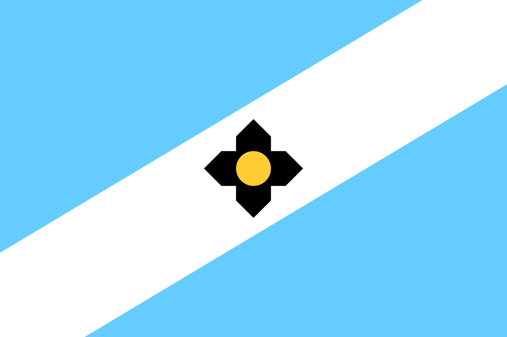
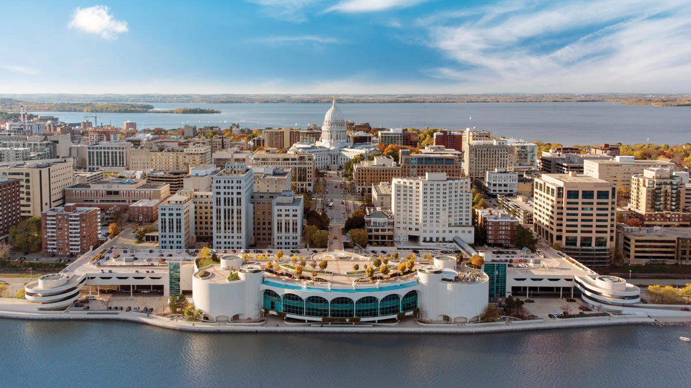

Madison, Wisconsin

Madison is the second-largest city in Wisconsin, as well as the capitol city.
It is located on an isthmus between Lake Mendota and Lake Monona in the south-central region of the state.
Madison is home to many museums, festivals, and sporting events.
Madison is one of the most bike-friendly cities in the United States, with many residents biking all year round.
(visp.wisc.edu)
City Info
Population: 272,000
Incorporated: 1856
Classification: Urban
Region: South-Central
Average Income: 42k (State Avg: 58k)

Activities

Brat Fest
Art in the Park
Sports
UWM Badgers